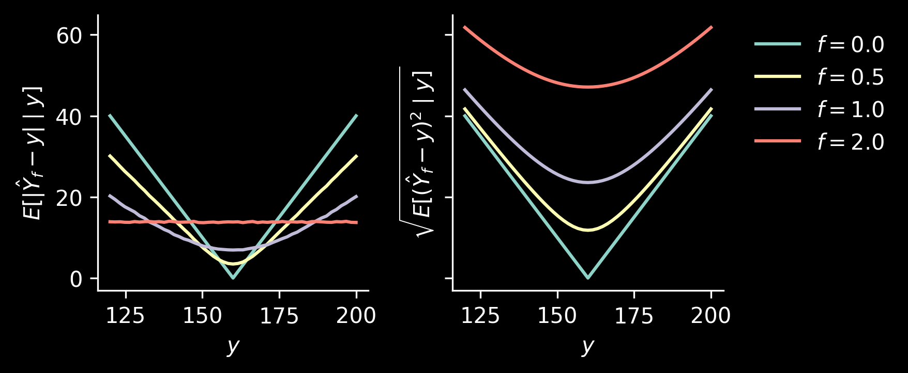

The discussion is a great read on foundations of Bayesian statistics (and it’s open access!), but we will not summarise it today. Instead, let’s focus on an example from Andrew Gelman’s Rejoinder on regression to the mean and unbiased predictions.
The example
Andrew Gelman considers a problem in which one tries to estimate the height of adult daughter, \(Y\), from the height of her mother, \(X\). Consider an artificial scenario, where we have millions of data points, which we can use to estimate the joint probability distribution \((X, Y)\) and it turns out to be bivariate normal1 of the following form: \[
\begin{pmatrix} X\\Y \end{pmatrix} \sim \mathcal N\left(\begin{pmatrix}\mu\\\mu\end{pmatrix}, \sigma^2\begin{pmatrix} 1 & 0.5 \\ 0.5 & 1\end{pmatrix} \right)
\] with known \(\mu\) and \(\sigma\), say, \(\mu=160\) and \(\sigma=10\) in centimeters.
The marginal distributions on both \(X\) and \(Y\) are the same: \(\mathcal N(\mu, \sigma^2)\).
The conditional distributions are also normal and take very similar form: \[
Y\mid X=x \sim \mathcal N\big( \mu + 0.5(x-\mu), 0.75\sigma^2\big),
\] and \[
X\mid Y=y \sim \mathcal N\big( \mu + 0.5(y-\mu), 0.75\sigma^2\big).
\]
Let’s plot the conditional distribution in the fist panel. We will plot conditional distributions using mean \(\mathbb E[Y\mid X=x]\) and the intervals representing one, two, and three standard deviations from it.
Then, in the second panel we will overlay it with points and the line \(y=x\) (dashed red line).
The \(y=x\) has greater slope than \(\mathbb E[Y\mid X=x]\) (namely, 1 is greater than 0.5), which is the usual regression to the mean.
Biased and unbiased estimators
We have seen that we could do probabilistic prediction, returning the whole conditional distribution \(P(Y\mid X=x)\). Imagine however that a single point is required as the answer. We can take \(\mathbb E[Y\mid X=x]\) as one estimator (solid line in the previous plot). More generally, for every number \(f\in \mathbb R\) define an estimator \[
\hat Y_f = \mu + f\cdot (X-\mu).
\]
We have the following:
For \(f=0\), we have \(\hat Y_0 = \mu\) is constantly predicting the mean.
For \(f=0.5\), \(\hat Y_{0.5} = 0.5(X + \mu)\) is the regression to the mean we have seen above.
For \(f=1\), \(\hat Y_1 = X\) returns the input, which we also have seen above.
Let’s take a look at the bias and variance2 of these estimators.
We have \[
(X\mid Y=y) \sim \mathcal N\big(\mu + 0.5(y-\mu), 0.75\sigma^2\big)
\] and \(\hat Y_f = f\cdot X + \mu(1-f)\), meaning that \[
\mathbb{V}[ \hat Y_f \mid Y=y ] = f^2 \cdot \mathbb{V}[X \mid Y=y] = 0.75 f^2\sigma^2
\] and \[
\begin{align*}\mathbb E[ \hat Y_f \mid Y=y ] &= \mu(1-f) + f\cdot \mathbb E[X \mid Y=y ]\\ &= \mu(1-f) + f\cdot ( \mu + 0.5(y-\mu) ) \\ &=\mu-\mu f + f\mu + 0.5 f\cdot (y-\mu) \\
&= \mu + 0.5f\cdot (y-\mu) \\ &= 0.5 f\cdot y +\mu(1-0.5f)\end{align*}
\]
Hence, for \(f=0.5\) we have \[
\mathbb E[\hat Y_{0.5}\mid Y=y] = 0.25y + 0.75\mu,
\] which is biased towards the mean.
To have an unbiased estimate, consider \(f=2\): \[
\mathbb E[\hat Y_2\mid Y=y] = y,
\] which however has the form \((\hat Y_2 \mid X=x) = \mu + 2(x-\mu)\), which amplifies the measured distance from the mean!
Visualisations
Let’s spend a minute designing the plots and then visualise the estimators.
The raw data are visualised by plotting \(Y\) and \(X\). We can add the lines \(\hat Y_f\mid X=x\) to them, to add some information on how \(\hat Y_f\) (which is a deterministic function of \(X\)) varies, and what the predictions are.
Then, we can also look at the plot of \(\hat Y_f\) and \(Y\). This will be a good illustration showing what bias and variance of these estimators actually mean. We will add a dashed “diagonal” line, \(\hat y_f = y\), to each of these plots.
/tmp/ipykernel_43846/2941644956.py:11: UserWarning: Attempting to set identical low and high ylims makes transformation singular; automatically expanding.
ax.set_ylim(np.min(y_), np.max(y_))
The bias can be seen in the following manner: for each value \(Y\), the values of \(\hat Y\) corresponding to that \(Y\) should be distributed in such a way that the mean lies on the line. This actually will be easier to see once we plot the difference \(\hat Y_f - \hat Y\) and \(Y\).
We also see what how variance manifests: for \(Y\approx 160\), we have quite a range of corresponding \(\hat Y_2\). The estimator \(\hat Y_{0.5}\) has clear bias for \(Y\) far from the mean, but for most of the data points (which lie close the mean in this case) the prediction is reasonable.
In fact, let’s plot \(\mathbb E[|\hat Y_f -y | \mid y]\) and \(\sqrt{\mathbb E[(\hat Y_f-y)^2\mid y]}\) as a function of \(y\):
Code
n_y_hat_samples =10_000y_ax = np.linspace(mu -4* sigma, mu +4* sigma, 51)# Shape (n_y, n_y_hat_samples)x_samples = mu +0.5* (y_ax[:, None] - mu) + rng.normal(loc=0, scale=np.sqrt(0.75) * sigma, size=(y_ax.shape[0], n_y_hat_samples))fig, axs = plt.subplots(1, 2, figsize=(2.5*2+1, 2.5), dpi=150, sharex=True, sharey=True)ax = axs[0]for f in fs: preds = yhat(x_samples, f) loss = np.mean(np.abs(preds - y_ax[:, None]), axis=1) ax.plot(y_ax, loss, label=f"$f=${f:.1f}")# ax.legend(frameon=False)ax.set_xlabel("$y$")ax.set_ylabel(r"$E[|\hat Y_f-y| \mid y ]$")ax = axs[1]for f in fs: preds = yhat(x_ax, f) loss = np.sqrt(np.mean(np.square(preds - y_ax[:, None]), axis=1)) ax.plot(y_ax, loss, label=f"$f=${f:.1f}")ax.legend(frameon=False, bbox_to_anchor=(1.05, 1.0))ax.set_xlabel("$y$")ax.set_ylabel(r"$\sqrt{E[(\hat Y_f-y)^2 \mid y ]}$")for ax in axs: ax.spines[['top', 'right']].set_visible(False)fig.tight_layout()

Twisting the problem
The above plots condition on unobserved parameter \(y\). Let’s think what happens when we observe the value \(X\) and we want to know how far our estimate \(\hat Y_f\) is from the unobserved value \(Y\). We can do a variant of one plots we have seen previously, where we put \(X\) on the horizontal axis and \(\hat Y_f-Y\) on the vertical one:
We see that for all values of \(X\), the regression to the mean estimator, \(\hat Y_{0.5}\), works well. Let’s also take a look at the following losses, measuring how wrong our predictions will be on average for a given value of \(X\): \[\begin{align*}
\ell_1(x) &= \mathbb E\left[\left| Y_f - Y \right| \mid X=x \right], \\
\ell_2(x) &= \sqrt{\mathbb E\left[\left( \hat Y_f - Y \right)^2 \mid X=x \right]}.
\end{align*}
\]
Code
n_y_samples =10_000# Shape (n_x, n_y_samples)y_samples = mu +0.5* (x_ax[:, None] - mu) + rng.normal(loc=0, scale=np.sqrt(0.75) * sigma, size=(x_ax.shape[0], n_y_samples))fig, axs = plt.subplots(1, 2, figsize=(2.5*2+1, 2.5), dpi=150, sharex=True, sharey=True)ax = axs[0]for f in fs: preds = yhat(x_ax, f) loss = np.mean(np.abs(y_samples - preds[:, None]), axis=1) ax.plot(x_ax, loss, label=f"$f=${f:.1f}")ax.set_xlabel("$x$")ax.set_ylabel(r"$\ell_1$")ax = axs[1]for f in fs: preds = yhat(x_ax, f) loss = np.sqrt(np.mean(np.square(y_samples - preds[:, None]), axis=1)) ax.plot(x_ax, loss, label=f"$f=${f:.1f}")ax.set_xlabel("$x$")ax.set_ylabel(r"$\ell_2$")ax.legend(frameon=False, bbox_to_anchor=(1.05, 1.0))for ax in axs: ax.spines[['top', 'right']].set_visible(False)fig.tight_layout()
Even for values of \(X\) quite far from the mean, some bias helps! Overall, we see that regression to the mean is a sensible strategy in this case.
Also, using \(f=1\) (i.e., \(\hat Y_f=X\)) performs as well as \(f=0\) (constant prediction \(\mu\)). More precisely, observe that \[
\left(Y - \hat Y_0 \mid X=x\right) = (Y-\mu \mid X=x) \sim \mathcal N\left( 0.5(x-\mu), 0.75 \sigma^2\right)
\] and \[
\left(Y - \hat Y_1 \mid X=x\right) = (Y-X \mid X=x) \sim \mathcal N\left( 0.5(\mu - x) , 0.75\sigma^2 \right)
\]
and the absolute value (or squaring) makes the losses exactly equal. This is also visible in the plot representing \(X\) and \(Y_f - Y\).
As a final note, one can notice that for every \(x\), both \(\ell_1\) and \(\ell_2\) are minimised for \(f=0.5\) using the following argument: \(f=0.5\) predicts the mean of the conditional distribution \(Y\mid X=x\). The sum of squares (in this case we have actually expectation, but let’s not worry about averaging) is minimised for the mean. Similarly, median optimises the sum of absolute deviations, and each of the normal distributions representing \(Y-\hat Y_f \mid X=x\) has mean equal to median.
Digression: simple linear regression and PCA
This section perhaps may be distracting and shouldn’t really be a part of this post, but I couldn’t resist: I still very much like this digression and I’m grateful for the opportunity to figure it out together with David.
Simple linear regression
What would happen if we fitted simple linear regression, \(y=a+bx\)? As we assume that we have a very large sample size, sample covariance is pretty much the same as the population covariance. Hence, the slope is given by \[
b = \mathrm{Cov}(X, Y)/\mathbb{V}[X] = 0.5\sigma^2/\sigma^2 = 0.5
\]
and the intercept is \[
a = \mathbb E[Y] - b\cdot \mathbb E[X] = \mu - 0.5\mu = 0.5\mu,
\] so that the line is \(y = 0.5(\mu + x)\) and corresponds to the regression to the mean estimator \(\hat Y_{0.5}\). It shouldn’t be surprising: simple linear regression minimises the overall squared error. For each value \(x\) of \(X\) we actually know that it should be \(\mathbb E[Y\mid X=x]\), which is exactly \(\hat Y_{0.5}\).
Principal component analysis
What is the first principal component? For PCA we center the data, so that the principal component will be passing through \((\mu, \mu)\). To find the slope, we need to find the eigenvector corresponding to the largest value of the covariance matrix of the data. We don’t really need to worry about the positive \(\sigma^2\) factor, so let’s find the eigenvector of the matrix \[
\begin{pmatrix}
1 & 0.5\\
0.5 & 1
\end{pmatrix}.
\]
The largest eigenvalue is \(1.5\) with an eigenvector \((1, 1)\) (and the other eigenvalue is \(0.5\) with eigenvector, of course orthogonal, \((-1, 1)\)). Hence, the line describing the principal component is given by \((x-\mu, y-\mu) = t (1, 1)\), where \(t\in \mathbb R\), which is the same line as \(y=x\). We see that this is essentially the \(\hat Y_1\) estimator.
Footnotes
Yes, height can’t be negative. But let’s ignore that: it’s a toy, but still informative, problem.↩︎
It would be a wasted opportunity to not mention this wonderful joke. The whole lecture is a true gem.↩︎